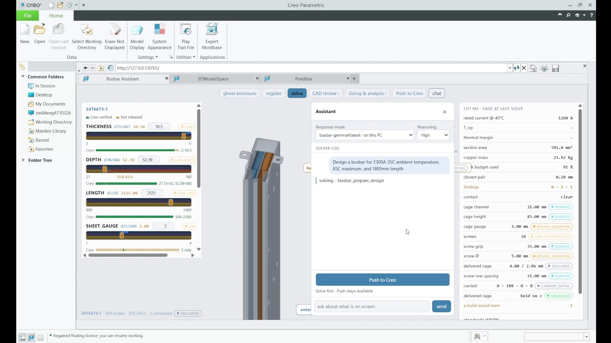
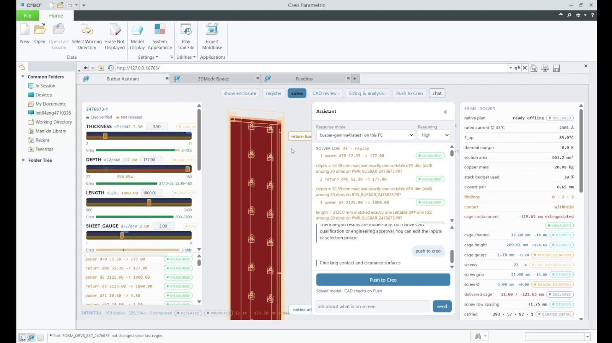
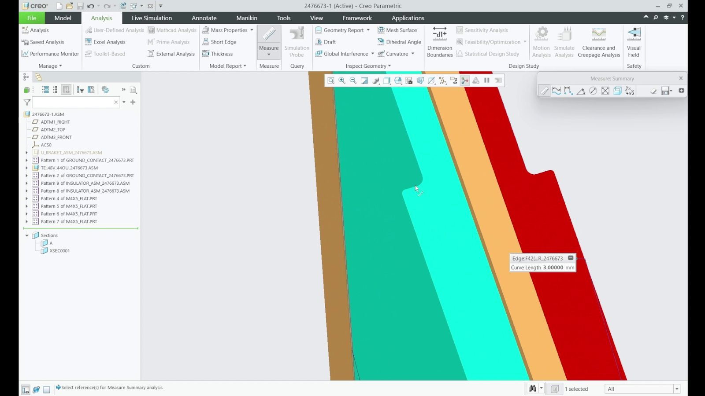

Why it matters
A busbar is the solid metal conductor that carries power inside electrical equipment. At TE Connectivity, the CAD for one busbar design takes an engineer 3 to 4 days. A language model can read a request, but it cannot be relied on to write geometry, and an engineer will not accept an edit that nobody has checked.
The idea
The engineer and the model change the same short list of design parameters, and neither writes geometry directly. A solver checks every change in milliseconds, before the CAD software runs, and refuses the ones it cannot prove. In trial, a design took 8 to 12 minutes.
1The problem
A busbar is a solid metal conductor that distributes power inside electrical equipment. TE Connectivity, a connector and sensor manufacturer, designs them to requests like the one typed in the video: a current, an ambient temperature, a maximum temperature and a length. Producing the CAD for one design takes an engineer 3 to 4 days.
This is parametric CAD automation, and the hard part is trust. Each trial of a change in CAD takes one to two minutes to regenerate. A language model can read a request, but it cannot be relied on to write geometry. An engineer will not accept a model edit that nobody has checked.
2What I built
One shared design state. The engineer and the language model work on the same explicit set of parameters, through the same interface. The model is hosted locally. It resolves a request into a typed change to a named parameter and acts only through tool calls. It never emits geometry.
A solver that proves each change first. Before anything is written to CAD, a geometry solver checks the change against a digital twin of the assembly. It uses exact 2D section arithmetic, 1D layout evaluation, a conflict engine with six classes of conflict, and a clearance envelope for the full assembly. The verdict arrives in milliseconds, against one to two minutes for a trial in CAD.
Native CAD, driven in place. A proven change drives the native Creo Parametric model through PTC's supported API, with the feature tree intact, so the result is an ordinary Creo model. The regenerated assembly is then measured against what the solver predicted. If the two drift apart, the change is rolled back automatically.
Findings tied to standards. A component graph over mating constraints and fastener topology describes how the parts connect. Checks against IEC 61439-6, IEC 60664-1 and IEC 60865-1 are reported as findings, and each finding carries the clause it comes from.






3Results
The 77% figure comes from a leave-one-subject-out, side-by-side test against busbars drawn by TE's designers. The system is deployed and tested on TE's internal environment in Bengaluru, where it is in trial. I present it in monthly reviews to TE's global busbar engineering leadership.
4What it does not do
The design space is authored by hand. The parameters, their dependencies and their limits are written down explicitly, and the system does not learn them. The language model chooses which parameter to change and by how much. Whether the change is valid is decided by the solver and then by measurement in Creo.
The collaboration has two workstreams. Lokesh Dandumahanti leads requirements and sizing. This page covers the AI for CAD workstream, which is mine.
5Why it matters for my research
This system is the first working case of the representation my research is about: an explicit, verifiable state of a product's engineering (its variables, dependencies and validity limits) that engineers and AI agents can share, inspect and check against geometry, physics and standards. The request for it came from engineers themselves, as the desAIgn works page records. Research direction.